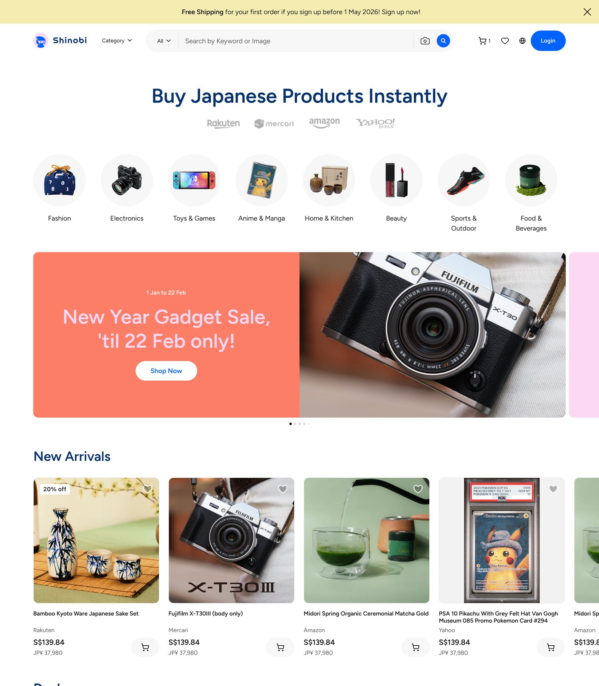
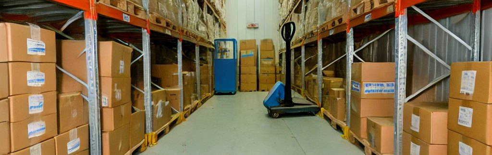
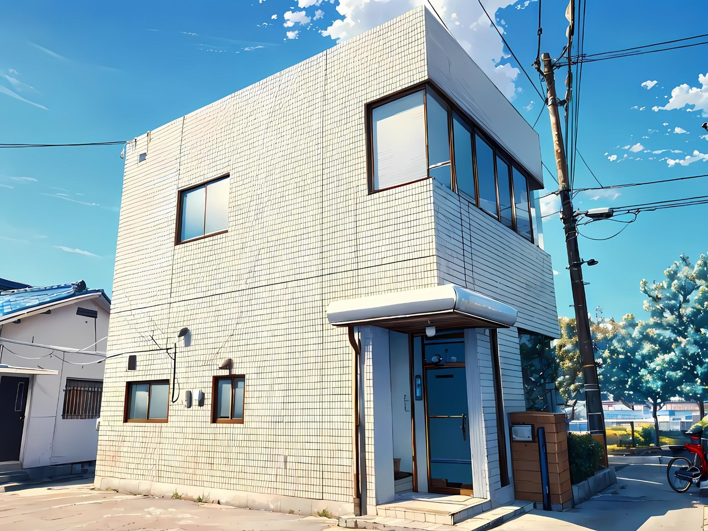

01 / Global commerce
Shinobi-cartで海外と直接つながる販路づくり
海外ユーザーが日本の商品を買いやすくなる仕組みを開発。購入、保管、同梱、海外配送までをシームレスにつなげます。
Global playground company
Shinobi-cartは始まり。海外販路、制度活用、学び、出会いの場を横断し、次の面白いことを事業として形にしていく。SumiXは、挑戦の入口を明るくひらく会社です。

中間を省いて
日本と世界を結ぶ
計画だけでなく
実行まで一緒に
地方から
国際市場にアクセスする
常に前を向き、
次の事業をつくる
Rebranding direction
輸出、EC、補助金、教育、コミュニティ。ばらばらに見える領域を、SumiXは「人と商品が新しい市場に出会う仕組み」としてつなぎます。
商社・スタートアップ・プロダクト開発で培った実務の引き出しを、事業者の挑戦にそのまま注ぎ込む。遊び心は、雑さではなく、前に進むためのエネルギーです。
Business domains
海外販路、制度活用、学び、場所づくりを一体で動かします。
01 / Global commerce
海外ユーザーが日本の商品を買いやすくなる仕組みを開発。購入、保管、同梱、海外配送までをシームレスにつなげます。

02 / Export studio
輸出書類、物流、マーケティング調査、現地パートナー開拓まで、海外に売るための現場を一緒に整えます。
03 / Public support
海外展開に関わる補助金や制度の整理、申請前の事業設計、採択後の実行管理まで伴走します。
04 / Education
コード、AI、ものづくりを「遊びながら試す」体験に。子どもたちが未来の選択肢に触れる場をつくります。
05 / Community
宮崎県都城市の予約制スペース「ゆるラボ」を拠点に、事業者、学生、クリエイター、移住者がゆるやかにつながる場を運営します。
ゆるラボの詳細を見る →まずは気軽にどうぞ
海外展開の第一歩、一緒に踏み出しませんか？
Featured product
日本のECモールや店舗でしか買えない商品を、海外のお客様が見つけ、まとめて受け取りやすくする。SumiXが目指すのは、越境購入の不便さを、わくわくする買い物体験に変えることです。
日本の商品を見つける
SumiX倉庫でまとめる
海外の住所へ届ける
How we work
仕入先開拓、輸出先開拓、展示会出展、マーケティング調査、物流・通関まわりまで、実務を前提に計画します。
補助金や公的制度は、申請書だけでなく実行できる事業設計が大切です。計画、体制、進捗管理をまとめて支えます。
News & topics
公開時には日付やリンクを整えて、ニュースリリースとして更新していけます。
Product
日本の商品を海外ユーザーが探し、まとめて受け取りやすくする購入・保管・配送の仕組みを整備しています。
Education
AIやコードを特別なものにせず、子どもたちが自由に触れて試せる学びの機会を広げます。
Community
予約制の小さな拠点として、学生、デザイナー、プログラマー、移住者、事業者が集まり、仕事と交流が生まれる場所を育てています。

Yuru Labo
ゆるラボは、宮崎県都城市の少人数でアットホームな予約制イベント＆コワーキングスペースです。仕事、学び、相談、イベントを通じて、地域の挑戦と海外への視点が交わる場所を目指しています。
ゆるラボは原則予約制です。最新の空き状況やご利用条件は事前にお問い合わせください。
FAQ
お問い合わせの前に、よくいただくご質問をまとめました。
現在、越境購入体験の開発・テスト段階です。パートナー企業や連携ショップを募集中ですので、ご関心のある方はお気軽にお問い合わせください。
海外展開を検討・準備している中小企業・スタートアップが主な対象です。業種や規模を問わず、まずはご相談ください。初回相談は無料で対応しています。
もちろんです。オンラインでの打ち合わせに対応しており、全国・海外どこからでもご相談いただけます。まずはお問い合わせフォームよりお気軽にご連絡ください。
主に小学生〜中学生を対象としたワークショップを予定しています。詳細なプログラムや開催日程はお問い合わせください。
ゆるラボは原則予約制です。ご利用前にお問い合わせフォームまたはメール（info@sumix.jp）でご連絡ください。空き状況を確認してご案内いたします。
通常、1〜2営業日以内にご返信いたします。お急ぎの場合は、その旨をお問い合わせ内容にご記入いただくと優先的に対応いたします。
Company
Founder / CEO
総合商社でアフリカ向け発電所建設プロジェクトに携わったのち、国内スタートアップで新しい移動インフラづくり、事業立ち上げ、CS部門マネジメントを経験。輸出実務、プロジェクト推進、顧客体験設計を軸に、Shinobi-cart、海外展開支援、教育・地域コミュニティづくりを横断して進めています。
NPO法人まなびAIコネクト理事としても活動し、大学での特別講義や地域の学びの場づくりを通じて、社会課題とキャリアの接点をひらく取り組みを続けています。
Contact
まずは雑談に近い段階でも大丈夫です。送信内容はSumiXの窓口に届き、内容を確認して担当者よりご連絡します。